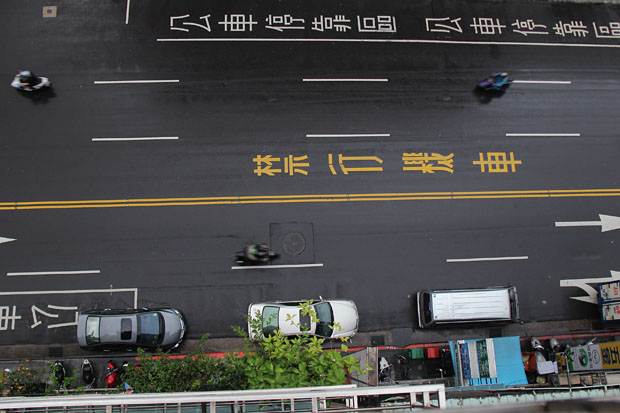

前言 一切的開始，是歷史油土伯Cheap的交通局業配風波，其中最重要的一點是，Cheap透過公關得知，交通部要求他幫忙宣導關於機車安全的項目，包含了一項不在法規內的奇怪要求：機車需依規定禮讓大小客車。除此之外還在機車族群身上貼標籤，又不尊重影片創作者，讓經Cheap忍無可忍，拒絕了此次業配，不收交通局的錢，但還是免費幫他們宣導機車行車安全。影片中Cheap提到機車族群遭到歧視，甚至是被交通局歧視。如此的指控後，網路上就掀起了一陣風，吹起許多關於臺灣機車相關的討論。
討論 機車會被歧視的原因有這些：第一點也是最大點，機車有最大的事故率與死亡率。第二點，機車常在車陣中鑽來鑽去。第三點，被歸類為機慢車，在部分地方會有禁行機車的車道及機車優先道。官方說機車出事傷亡率高，為了降低風險，特別規畫出機車優先道，讓機車可以與汽車分開，降低出事的機會。然而，機車道卻被公車、計程車、紅線違停的汽車占用，時不時還會有人不看路就開車門，讓這個機車道變得更加危險。更不用說汽車會從機車道的左邊右轉。歧視不只來自一般民眾而已，甚至來自交通部的官員。在Cheap影片中，可以看到上面這些問題被提及。而在企鵝交通手札的影片裡，出現了交通部官員對於臺灣交通事故的分析與報告。其中還是會對於機車族群有特別對待。
結論 雖然部分機車族老鼠屎讓人對機車族產生反感，甚至衍生出歧視，但這些人不代表所有騎機車的人。而在一些機車違規行為中，像是騎在禁行機車快車道，是因為機車道被占用，騎在那邊的危險更多，更何況機車也是能夠騎到與所謂＂快車＂一樣快的速度，只要有正確的駕駛觀念，就能避免危險。要改善人們對於機車的偏見與歧視，必須要改善騎士們的整體素質，更新考照制度。同時也要檢討現行交通規範與道路規劃是否合理、對於機車族群是否友善。而非一味地限制機車的路權。 